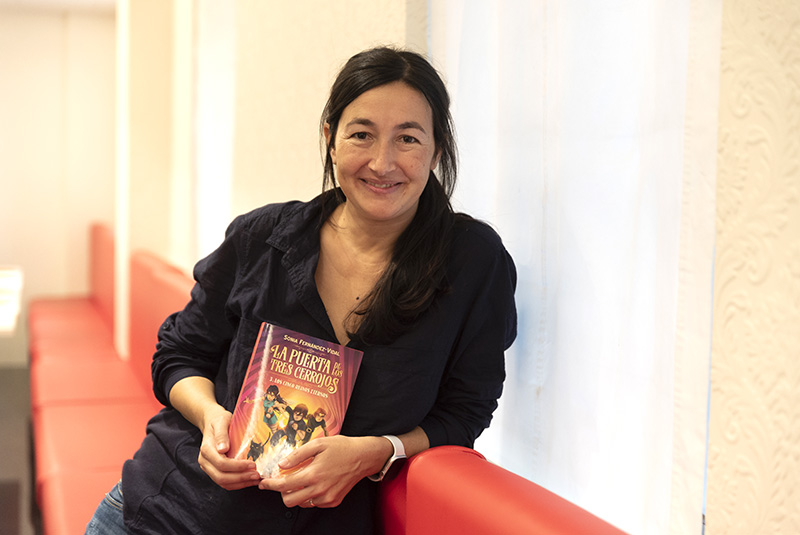

Sonia Fernández-Vidal (pinche aquí para ver su página web oficial), nacida en Barcelona en 1978, es una escritora, investigadora, emprendedora y divulgadora científica española.
Es doctora en Física por la UAB (Universidad Autonómica de Barcelona). Ha trabajado y colaborado en algunos de los centros más prestigiosos
como el CERN, el Laboratorio Nacional de Los Álamos o el ICFO. Además, es académica electa de la Real Academia Europea de Doctores (RAED). A partir de 2009
trabajó como docente e investigadora en la Universidad Autónoma de Barcelona, impartiendo, además, charlas de divulgación científica para personas no
especializadas. Actualmente es profesora del departamento de física de la UAB.
Sonia Fernández-Vidal es cofundadora y directora de Innovación de la consultora tecnológica Gauss & Neumann. En 2013, la firma Cortefiel eligió a Sonia como
imagen de su campaña Gente con Talento ? En 2017, Sonia fue elegida como una de las personas más creativas del mundo por la revista Forbes y
en 2018 como una de los 100 Líderes Económicos del Mañana? por el Instituto Choiseul.
Sonia Fernández-Vidal es autora de varios libros sobre divulgación científica, entre los que destacan La Puerta de los Tres Cerrojos , Quantic Love
y Desayuno con Partículas .
La Puerta de los Tres Cerrojos fue su primer libro de divulagación científica, destinada tanto a niños como a adultos, escrita en 2011. Sorprendentemente,
esta se mantuvo en la lista de los más vendidos de España durante meses y está traducido a 12 idiomas.
Quantic Love (2012), también colocó a Sonia Fernández-Vidal en las listas de los autores más vendidos en España, con una segunda edición tras un mes
de su lanzamiento y con 40.000 libros en librerías en menos de dos meses.
Desayuno con Partículas (2013) es un ensayo que aborda la física cuántica y profundiza en los experimentos más importantes de la física moderna de una
forma amena y muy dinámica. Este libro lo escribió junto con el periodista y escritor Francesc Miralles. Ambos son los protagonistas del hilo argumentativo que
nos conduce por los distintas experiencias que nos acercan a la física cuántica a lo largo de la obra.
Otros de sus libros más recientes son El Universo en Tus Manos , La Senda de las Cuatro Fuerzas y Los cinco reinos eternos .
Personalmente, conocí la figura de Sonia Fernández-Vidal gracias a una recomendación de mi profesora de Física y Química de 4ºESO y 1º Bach. Nos incitó a que comprásemos uno de los libros de esta mujer, Desayuno con Partículas . Ahora ese libro se encuentra en mi casa y, tras haber leído buena parte del mismo, me he dado cuenta de la capacidad pedagógica y divulgativa de Sonia. Sin duda, es un caso ejemplar de como, a partir de una base científica tras haber estudiado y trabajado, se deben expandir los conocimientos adquiridos.
